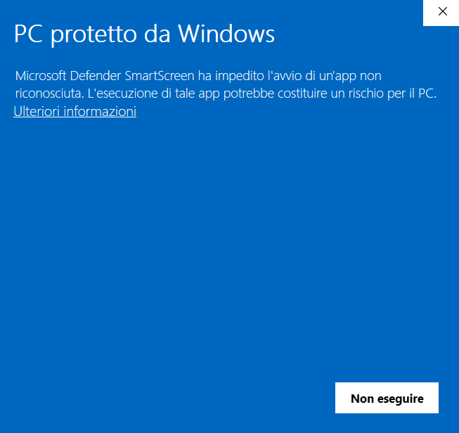

Perché compare l'avviso
Stand Gastronomico non è firmato digitalmente. Per questo, al primo avvio, Windows può mostrare il messaggio “PC protetto da Windows” di Microsoft Defender SmartScreen.

Prima di procedere
Continua solo se entrambe queste condizioni sono vere:
- hai scaricato il programma dalla release ufficiale del repository Stand Gastronomico;
- il nome e la versione del file ZIP corrispondono a quelli indicati nella release.
Non eseguire file ricevuti via email, messaggistica o siti diversi dal repository ufficiale.
Come avviare il programma
Se, dopo aver verificato la provenienza del download, compare la schermata SmartScreen:
- seleziona Ulteriori informazioni;
- controlla ancora di essere sicuro della provenienza del file;
- seleziona Esegui comunque.
Verifica facoltativa dell'integrità
Nel repository è disponibile il file SHA256SUMS.txt, con l'impronta SHA-256 dell'archivio ZIP della versione corrente. È un controllo facoltativo, utile se vuoi verificare che il download non sia stato alterato.
Apri PowerShell nella cartella che contiene il file ZIP ed esegui:
Get-FileHash -Algorithm SHA256 -LiteralPath .\StandGastronomico-1.0.1-win-x64.zipConfronta il valore mostrato con quello riportato in SHA256SUMS.txt. I due valori devono essere identici.